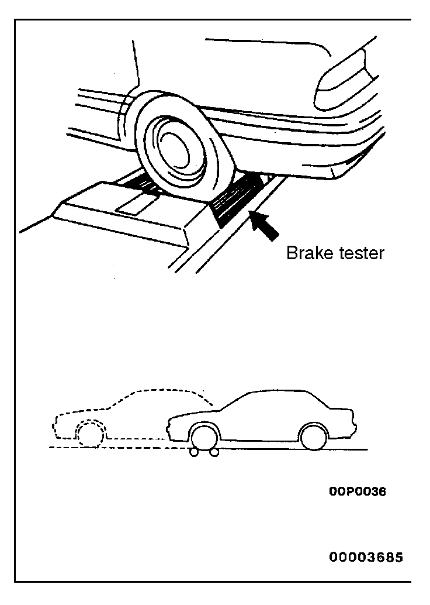
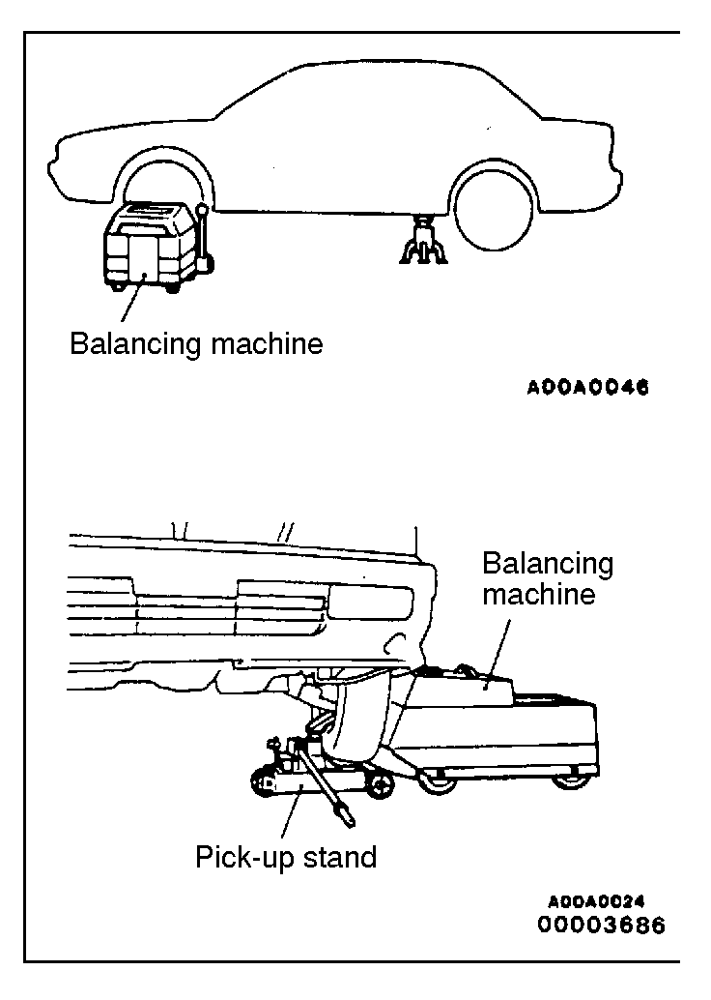

![[Previous]](https://mitsubishitechinfo.com/data/F24S/BUTTONS/fprevg.png)
![[Next]](https://mitsubishitechinfo.com/data/F24S/BUTTONS/fnextg.png)
|
|
SPECIAL HANDLING INSTRUCTIONS FOR AWD MODELS
Speedometer tests, brake tests and wheel balance measurement for full-time AWD vehicles should be carried out according to the following procedures.
SPEEDOMETER TEST
Refer to GROUP 54 - Combination Meter. |
|

|
BRAKE TEST
In order to stabilize the viscous coupling`s dragging force, the brake test should always be conducted after the speedometer test.
FRONT WHEEL MEASUREMENTS
1.Place the front wheels on the brake tester.
2.Perform the brake test.
Caution
The rear wheels should remain on the ground.
3.If the brake dragging force exceeds the specified value, jack up the vehicle and manually rotate each wheel to check the rotation condition of each wheel.
NOTE
If the brake dragging force exceeds the specified value, the cause may be the effect of the viscous coupling's dragging force, so jack up the front wheels and check the rotation condition of the wheels in this state for no effect by the viscous coupling`s dragging force. |

|
REAR WHEEL MEASUREMENTS
After placing the rear wheels on the brake tester, follow the same procedures as for the front wheel measurements.
Brake force of AWD models with VCU
If both front wheels are locked and rear wheel measurement is difficult, the measurement in this condition can be considered to comprise the total.
| Items |
Brake force |
Total for left and
right rear wheels |
At 90 kg (198 lbs.) ped-
al depression force |
20 % or more of rear
axle weight |
Difference for left
and right front
wheels/differ-
ence for left and
right rear wheels |
8% or less of rear
axle weight |
8% or less of rear
axle weight |
Total for front
and rear wheels |
At 90 kg (198 lbs.) ped-
al depression force |
50% or more of the
vehicle's weight |
|
or...
| Braking-stop distance |
At primary velocity of 50 km/h (31
mph): Within 15.0 m (49.2 ft.) |
|
|
|

|
WHEEL BALANCE
FRONT WHEEL MEASUREMENTS
1.Jack up the rear wheels, and place an axle stand at the designated part of the side sill.
2.Jack up the front wheels and set a pick-up stand and balancing machine in place.
Caution
1.Set so that the front and rear of the vehicle are at the same height.
2.Release the parking brake.
3.Rotate each wheel manually and check to be sure that there is no dragging.
3.Use the engine to drive the tyres, and then make the measurement.
Caution
1.If an error is indicated in the state of engine drive, motor drive can be used concurrently.
2.Do not operate the clutch suddenly, or increase or reduce speed suddenly during the work.
|
|
|
REAR WHEEL MEASUREMENTS
1.Jack up the front wheels, and place an axle stand at the designated part of the side sill.
2.Jack up the rear wheels, and then, after setting a pick-up stand and balancing machine in place, follow the same procedure as for front wheel measurements. |
|